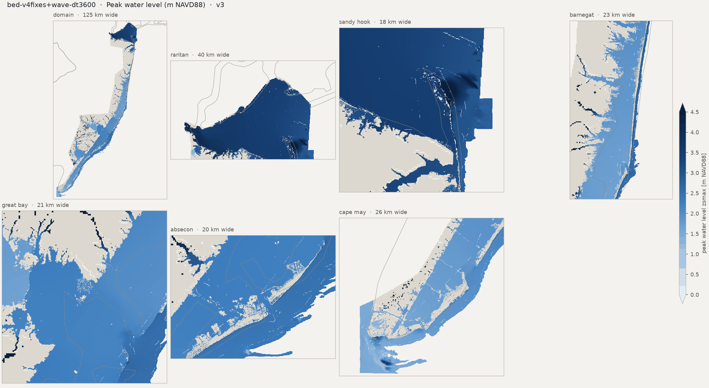
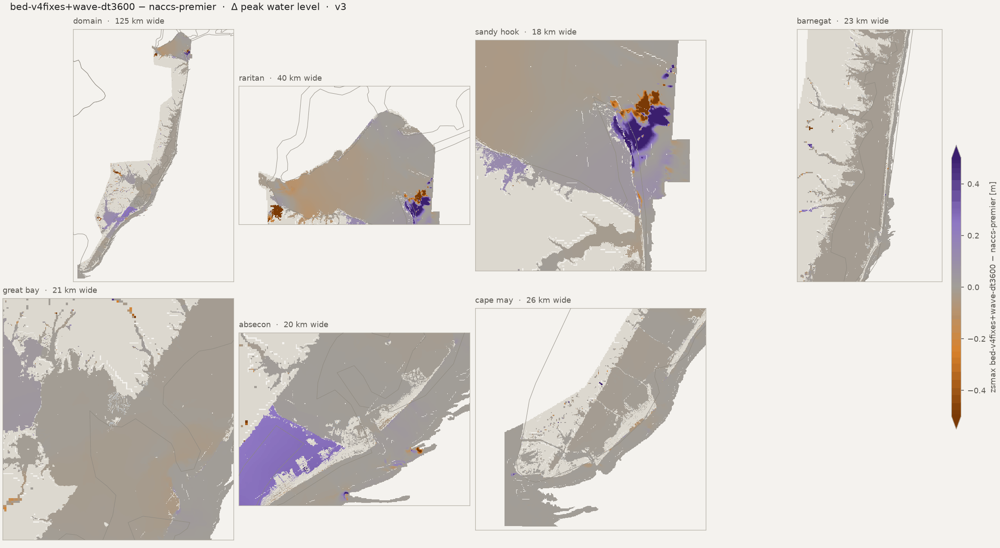
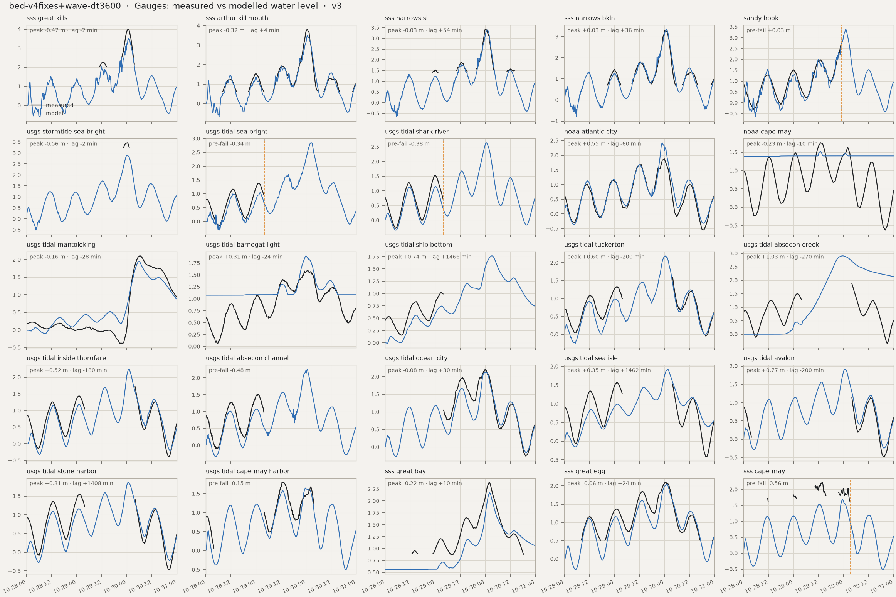
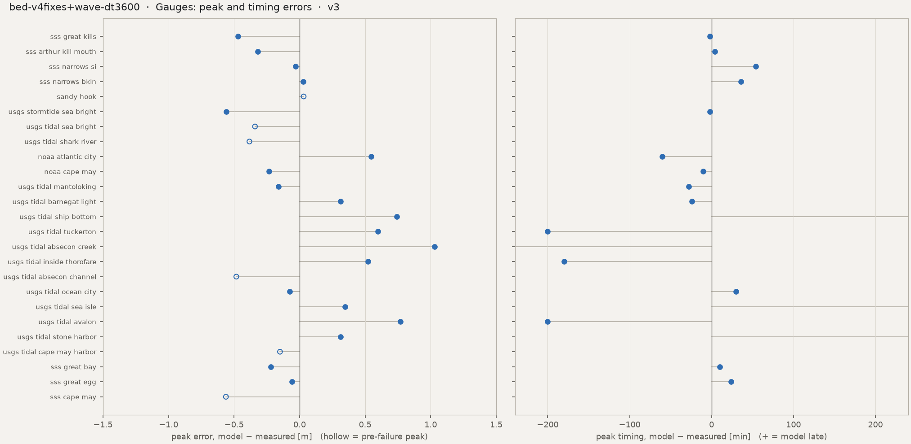
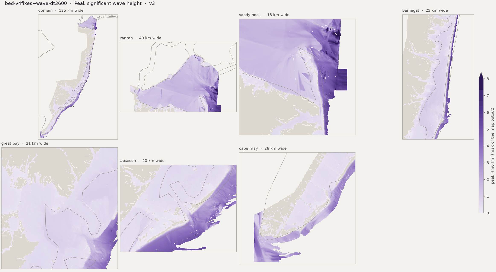

Run card, flags and the standard figure set. HWM numbers: estimator median, radius 50 m. Compare with naccs-premier
Preliminary research diagnostics — not peer-reviewed results.
HWM: estimator median, radius 50 m, q ≤ 2, dry marks scored at ground (the _scored keys). CSI / POD / FAR on sheet-valid land; km² excl. = motf_km2_excluded_boxes.





| peak_zb_sss_great_kills_m | -1.955272197723389 |
| peak_obs_sss_great_kills_m | 3.990640566666667 |
| peak_obs_time_sss_great_kills | 2012-10-30T00:42 |
| peak_mod_full_sss_great_kills_m | 3.5207486152648926 |
| peak_mod_full_time_sss_great_kills | 2012-10-30T00:40 |
| peak_err_sss_great_kills_m | -0.4698919514017743 |
| peak_lag_sss_great_kills_min | -2.0 |
| peak_zb_sss_arthur_kill_mouth_m | -1.063024401664734 |
| peak_obs_sss_arthur_kill_mouth_m | 3.8134290000000006 |
| peak_obs_time_sss_arthur_kill_mouth | 2012-10-30T00:36 |
| peak_mod_full_sss_arthur_kill_mouth_m | 3.493865489959717 |
| peak_mod_full_time_sss_arthur_kill_mouth | 2012-10-30T00:40 |
| peak_err_sss_arthur_kill_mouth_m | -0.3195635100402838 |
| peak_lag_sss_arthur_kill_mouth_min | 4.0 |
| peak_zb_sss_narrows_si_m | -1.4567134380340576 |
| peak_obs_sss_narrows_si_m | 3.4239073 |
| peak_obs_time_sss_narrows_si | 2012-10-30T00:06 |
| peak_mod_full_sss_narrows_si_m | 3.3949100971221924 |
| peak_mod_full_time_sss_narrows_si | 2012-10-30T01:00 |
| peak_err_sss_narrows_si_m | -0.0289972028778078 |
| peak_lag_sss_narrows_si_min | 54.0 |
| peak_zb_sss_narrows_bkln_m | -3.102429151535034 |
| peak_obs_sss_narrows_bkln_m | 3.315567833333333 |
| peak_obs_time_sss_narrows_bkln | 2012-10-30T00:24 |
| peak_mod_full_sss_narrows_bkln_m | 3.343583583831787 |
| peak_mod_full_time_sss_narrows_bkln | 2012-10-30T01:00 |
| peak_err_sss_narrows_bkln_m | 0.0280157504984539 |
| peak_lag_sss_narrows_bkln_min | 36.0 |
| peak_zb_sandy_hook_m | -4.232899188995361 |
| peak_obs_sandy_hook_m | 2.808 |
| peak_obs_time_sandy_hook | 2012-10-29T23:00 |
| peak_mod_full_sandy_hook_m | 3.385601758956909 |
| peak_mod_full_time_sandy_hook | 2012-10-30T01:00 |
| peak_mod_prefail_sandy_hook_m | 2.838930368423462 |
| peak_err_prefail_sandy_hook_m | 0.030930368423462 |
| peak_record_ends_sandy_hook | 2012-10-29 23:00 |
| peak_zb_usgs_stormtide_sea_bright_m | -1.7469388246536257 |
| peak_obs_usgs_stormtide_sea_bright_m | 3.4651196864959743 |
| peak_obs_time_usgs_stormtide_sea_bright | 2012-10-30T00:12 |
| peak_mod_full_usgs_stormtide_sea_bright_m | 2.906787633895874 |
| peak_mod_full_time_usgs_stormtide_sea_bright | 2012-10-30T00:10 |
| peak_err_usgs_stormtide_sea_bright_m | -0.5583320526001003 |
| peak_lag_usgs_stormtide_sea_bright_min | -2.0 |
| peak_zb_usgs_tidal_sea_bright_m | -4.3453803062438965 |
| peak_obs_usgs_tidal_sea_bright_m | 1.383792 |
| peak_obs_time_usgs_tidal_sea_bright | 2012-10-29T01:12 |
| peak_mod_full_usgs_tidal_sea_bright_m | 2.84485125541687 |
| peak_mod_full_time_usgs_tidal_sea_bright | 2012-10-30T02:40 |
| peak_mod_prefail_usgs_tidal_sea_bright_m | 1.0436887741088867 |
| peak_err_prefail_usgs_tidal_sea_bright_m | -0.3401032258911134 |
| peak_record_ends_usgs_tidal_sea_bright | 2012-10-29 04:00 |
| peak_zb_usgs_tidal_shark_river_m | -4.118553638458252 |
| peak_obs_usgs_tidal_shark_river_m | 1.527048 |
| peak_obs_time_usgs_tidal_shark_river | 2012-10-29T00:00 |
| peak_mod_full_usgs_tidal_shark_river_m | 2.639311075210572 |
| peak_mod_full_time_usgs_tidal_shark_river | 2012-10-30T00:40 |
| peak_mod_prefail_usgs_tidal_shark_river_m | 1.1474658250808716 |
| peak_err_prefail_usgs_tidal_shark_river_m | -0.3826301749191283 |
| peak_record_ends_usgs_tidal_shark_river | 2012-10-29 04:00 |
| peak_zb_noaa_atlantic_city_m | -7.114473819732666 |
| peak_obs_noaa_atlantic_city_m | 1.877 |
| peak_obs_time_noaa_atlantic_city | 2012-10-30T00:00 |
| peak_mod_full_noaa_atlantic_city_m | 2.423611879348755 |
| peak_mod_full_time_noaa_atlantic_city | 2012-10-29T23:00 |
| peak_err_noaa_atlantic_city_m | 0.5466118793487549 |
| peak_lag_noaa_atlantic_city_min | -60.0 |
| peak_zb_noaa_cape_may_m | 1.3890953063964844 |
| peak_obs_noaa_cape_may_m | 1.755 |
| peak_obs_time_noaa_cape_may | 2012-10-29T13:00 |
| peak_mod_full_noaa_cape_may_m | 1.522565841674805 |
| peak_mod_full_time_noaa_cape_may | 2012-10-29T12:50 |
| peak_err_noaa_cape_may_m | -0.2324341583251952 |
| peak_lag_noaa_cape_may_min | -10.0 |
| peak_zb_usgs_tidal_mantoloking_m | -2.429171085357666 |
| peak_obs_usgs_tidal_mantoloking_m | 2.1061680000000003 |
| peak_obs_time_usgs_tidal_mantoloking | 2012-10-30T06:18 |
| peak_mod_full_usgs_tidal_mantoloking_m | 1.9453657865524288 |
| peak_mod_full_time_usgs_tidal_mantoloking | 2012-10-30T05:50 |
| peak_err_usgs_tidal_mantoloking_m | -0.160802213447571 |
| peak_lag_usgs_tidal_mantoloking_min | -28.0 |
| peak_zb_usgs_tidal_barnegat_light_m | 1.0739723443984983 |
| peak_obs_usgs_tidal_barnegat_light_m | 1.588008 |
| peak_obs_time_usgs_tidal_barnegat_light | 2012-10-30T00:24 |
| peak_mod_full_usgs_tidal_barnegat_light_m | 1.899478912353516 |
| peak_mod_full_time_usgs_tidal_barnegat_light | 2012-10-30T00:00 |
| peak_err_usgs_tidal_barnegat_light_m | 0.3114709123535155 |
| peak_lag_usgs_tidal_barnegat_light_min | -24.0 |
| peak_zb_usgs_tidal_ship_bottom_m | -4.615384578704834 |
| peak_obs_usgs_tidal_ship_bottom_m | 1.024128 |
| peak_obs_time_usgs_tidal_ship_bottom | 2012-10-29T02:54 |
| peak_mod_full_usgs_tidal_ship_bottom_m | 1.7665468454360962 |
| peak_mod_full_time_usgs_tidal_ship_bottom | 2012-10-30T03:20 |
| peak_err_usgs_tidal_ship_bottom_m | 0.7424188454360963 |
| peak_lag_usgs_tidal_ship_bottom_min | 1466.0 |
| peak_zb_usgs_tidal_tuckerton_m | -1.9723796844482424 |
| peak_obs_usgs_tidal_tuckerton_m | 1.591056 |
| peak_obs_time_usgs_tidal_tuckerton | 2012-10-30T04:00 |
| peak_mod_full_usgs_tidal_tuckerton_m | 2.189107894897461 |
| peak_mod_full_time_usgs_tidal_tuckerton | 2012-10-30T00:40 |
| peak_err_usgs_tidal_tuckerton_m | 0.5980518948974609 |
| peak_lag_usgs_tidal_tuckerton_min | -200.0 |
| peak_zb_usgs_tidal_absecon_creek_m | 2.4660839699208736e-06 |
| peak_obs_usgs_tidal_absecon_creek_m | 1.87452 |
| peak_obs_time_usgs_tidal_absecon_creek | 2012-10-30T04:00 |
| peak_mod_full_usgs_tidal_absecon_creek_m | 2.904895544052124 |
| peak_mod_full_time_usgs_tidal_absecon_creek | 2012-10-29T23:30 |
| peak_err_usgs_tidal_absecon_creek_m | 1.0303755440521238 |
| peak_lag_usgs_tidal_absecon_creek_min | -270.0 |
| peak_zb_usgs_tidal_inside_thorofare_m | -5.44306755065918 |
| peak_obs_usgs_tidal_inside_thorofare_m | 1.712976 |
| peak_obs_time_usgs_tidal_inside_thorofare | 2012-10-30T04:00 |
| peak_mod_full_usgs_tidal_inside_thorofare_m | 2.2363028526306152 |
| peak_mod_full_time_usgs_tidal_inside_thorofare | 2012-10-30T01:00 |
| peak_err_usgs_tidal_inside_thorofare_m | 0.5233268526306152 |
| peak_lag_usgs_tidal_inside_thorofare_min | -180.0 |
| peak_zb_usgs_tidal_absecon_channel_m | -2.4803500175476074 |
| peak_obs_usgs_tidal_absecon_channel_m | 1.5575280000000002 |
| peak_obs_time_usgs_tidal_absecon_channel | 2012-10-29T01:06 |
| peak_mod_full_usgs_tidal_absecon_channel_m | 2.2537732124328613 |
| peak_mod_full_time_usgs_tidal_absecon_channel | 2012-10-30T00:40 |
| peak_mod_prefail_usgs_tidal_absecon_channel_m | 1.0748467445373535 |
| peak_err_prefail_usgs_tidal_absecon_channel_m | -0.4826812554626467 |
| peak_record_ends_usgs_tidal_absecon_channel | 2012-10-29 03:54 |
| peak_zb_usgs_tidal_ocean_city_m | -3.884687662124634 |
| peak_obs_usgs_tidal_ocean_city_m | 2.2098 |
| peak_obs_time_usgs_tidal_ocean_city | 2012-10-30T00:00 |
| peak_mod_full_usgs_tidal_ocean_city_m | 2.133591651916504 |
| peak_mod_full_time_usgs_tidal_ocean_city | 2012-10-30T00:30 |
| peak_err_usgs_tidal_ocean_city_m | -0.076208348083496 |
| peak_lag_usgs_tidal_ocean_city_min | 30.0 |
| peak_zb_usgs_tidal_sea_isle_m | -1.7042393684387207 |
| peak_obs_usgs_tidal_sea_isle_m | 1.575816 |
| peak_obs_time_usgs_tidal_sea_isle | 2012-10-29T01:18 |
| peak_mod_full_usgs_tidal_sea_isle_m | 1.921027421951294 |
| peak_mod_full_time_usgs_tidal_sea_isle | 2012-10-30T01:40 |
| peak_err_usgs_tidal_sea_isle_m | 0.3452114219512938 |
| peak_lag_usgs_tidal_sea_isle_min | 1462.0 |
| peak_zb_usgs_tidal_avalon_m | -5.937126636505127 |
| peak_obs_usgs_tidal_avalon_m | 1.139952 |
| peak_obs_time_usgs_tidal_avalon | 2012-10-30T04:00 |
| peak_mod_full_usgs_tidal_avalon_m | 1.9098472595214844 |
| peak_mod_full_time_usgs_tidal_avalon | 2012-10-30T00:40 |
| peak_err_usgs_tidal_avalon_m | 0.7698952595214843 |
| peak_lag_usgs_tidal_avalon_min | -200.0 |
| peak_zb_usgs_tidal_stone_harbor_m | -6.791902542114258 |
| peak_obs_usgs_tidal_stone_harbor_m | 1.551432 |
| peak_obs_time_usgs_tidal_stone_harbor | 2012-10-29T01:12 |
| peak_mod_full_usgs_tidal_stone_harbor_m | 1.8651856184005733 |
| peak_mod_full_time_usgs_tidal_stone_harbor | 2012-10-30T00:40 |
| peak_err_usgs_tidal_stone_harbor_m | 0.3137536184005736 |
| peak_lag_usgs_tidal_stone_harbor_min | 1408.0 |
| peak_zb_usgs_tidal_cape_may_harbor_m | -1.3016067743301392 |
| peak_obs_usgs_tidal_cape_may_harbor_m | 1.79832 |
| peak_obs_time_usgs_tidal_cape_may_harbor | 2012-10-29T12:42 |
| peak_mod_full_usgs_tidal_cape_may_harbor_m | 1.648892521858215 |
| peak_mod_full_time_usgs_tidal_cape_may_harbor | 2012-10-29T23:50 |
| peak_mod_prefail_usgs_tidal_cape_may_harbor_m | 1.648892521858215 |
| peak_err_prefail_usgs_tidal_cape_may_harbor_m | -0.1494274781417848 |
| peak_record_ends_usgs_tidal_cape_may_harbor | 2012-10-30 03:54 |
| peak_zb_sss_great_bay_m | 0.5555722713470459 |
| peak_obs_sss_great_bay_m | 2.389551566666667 |
| peak_obs_time_sss_great_bay | 2012-10-30T02:00 |
| peak_mod_full_sss_great_bay_m | 2.170859336853028 |
| peak_mod_full_time_sss_great_bay | 2012-10-30T02:10 |
| peak_err_sss_great_bay_m | -0.2186922298136395 |
| peak_lag_sss_great_bay_min | 10.0 |
| peak_zb_sss_great_egg_m | -1.4922324419021606 |
| peak_obs_sss_great_egg_m | 2.098467566666667 |
| peak_obs_time_sss_great_egg | 2012-10-30T00:36 |
| peak_mod_full_sss_great_egg_m | 2.0389974117279053 |
| peak_mod_full_time_sss_great_egg | 2012-10-30T01:00 |
| peak_err_sss_great_egg_m | -0.0594701549387615 |
| peak_lag_sss_great_egg_min | 24.0 |
| peak_zb_sss_cape_may_m | -7.165440559387207 |
| peak_obs_sss_cape_may_m | 2.24273711641651 |
| peak_obs_time_sss_cape_may | 2012-10-29T13:48 |
| peak_mod_full_sss_cape_may_m | 1.68081796169281 |
| peak_mod_full_time_sss_cape_may | 2012-10-29T23:30 |
| peak_mod_prefail_sss_cape_may_m | 1.68081796169281 |
| peak_err_prefail_sss_cape_may_m | -0.5619191547237006 |
| peak_record_ends_sss_cape_may | 2012-10-30 03:12 |
| tide_obs_range_sss_great_kills_m | 0.204 |
| tide_mod_range_sss_great_kills_m | 1.991 |
| tide_mod_drift_sss_great_kills_m | 0.667 |
| tide_mod_frac_rising_sss_great_kills | 0.474 |
| tide_mod_is_tidal_sss_great_kills | True |
| tide_range_damping_sss_great_kills_m | -1.786 |
| phase_lag_sss_great_kills_min | |
| tide_obs_range_sss_arthur_kill_mouth_m | 1.309 |
| tide_mod_range_sss_arthur_kill_mouth_m | 2.009 |
| tide_mod_drift_sss_arthur_kill_mouth_m | 0.411 |
| tide_mod_frac_rising_sss_arthur_kill_mouth | 0.468 |
| tide_mod_is_tidal_sss_arthur_kill_mouth | True |
| tide_range_damping_sss_arthur_kill_mouth_m | -0.7 |
| phase_lag_sss_arthur_kill_mouth_min | 4.1 |
| tide_obs_range_sss_narrows_si_m | 0.407 |
| tide_mod_range_sss_narrows_si_m | 1.729 |
| tide_mod_drift_sss_narrows_si_m | 0.394 |
| tide_mod_frac_rising_sss_narrows_si | 0.5 |
| tide_mod_is_tidal_sss_narrows_si | True |
| tide_range_damping_sss_narrows_si_m | -1.323 |
| phase_lag_sss_narrows_si_min | -47.3 |
| tide_obs_range_sss_narrows_bkln_m | 1.035 |
| tide_mod_range_sss_narrows_bkln_m | 1.852 |
| tide_mod_drift_sss_narrows_bkln_m | 0.396 |
| tide_mod_frac_rising_sss_narrows_bkln | 0.511 |
| tide_mod_is_tidal_sss_narrows_bkln | True |
| tide_range_damping_sss_narrows_bkln_m | -0.817 |
| phase_lag_sss_narrows_bkln_min | -120.0 |
| tide_obs_range_sandy_hook_m | 2.029 |
| tide_mod_range_sandy_hook_m | 1.984 |
| tide_mod_drift_sandy_hook_m | 0.559 |
| tide_mod_frac_rising_sandy_hook | 0.496 |
| tide_mod_is_tidal_sandy_hook | True |
| tide_range_damping_sandy_hook_m | 0.045 |
| phase_lag_sandy_hook_min | -0.9 |
| tide_obs_range_usgs_stormtide_sea_bright_m | |
| tide_mod_range_usgs_stormtide_sea_bright_m | 1.468 |
| tide_mod_drift_usgs_stormtide_sea_bright_m | 0.514 |
| tide_mod_frac_rising_usgs_stormtide_sea_bright | 0.564 |
| tide_mod_is_tidal_usgs_stormtide_sea_bright | True |
| tide_range_damping_usgs_stormtide_sea_bright_m | |
| phase_lag_usgs_stormtide_sea_bright_min | |
| tide_obs_range_usgs_tidal_sea_bright_m | 1.283 |
| tide_mod_range_usgs_tidal_sea_bright_m | 1.125 |
| tide_mod_drift_usgs_tidal_sea_bright_m | 0.331 |
| tide_mod_frac_rising_usgs_tidal_sea_bright | 0.53 |
| tide_mod_is_tidal_usgs_tidal_sea_bright | True |
| tide_range_damping_usgs_tidal_sea_bright_m | 0.158 |
| phase_lag_usgs_tidal_sea_bright_min | 14.6 |
| tide_obs_range_usgs_tidal_shark_river_m | 1.539 |
| tide_mod_range_usgs_tidal_shark_river_m | 1.399 |
| tide_mod_drift_usgs_tidal_shark_river_m | 0.491 |
| tide_mod_frac_rising_usgs_tidal_shark_river | 0.518 |
| tide_mod_is_tidal_usgs_tidal_shark_river | True |
| tide_range_damping_usgs_tidal_shark_river_m | 0.141 |
| phase_lag_usgs_tidal_shark_river_min | 9.7 |
| tide_obs_range_noaa_atlantic_city_m | 1.798 |
| tide_mod_range_noaa_atlantic_city_m | 1.37 |
| tide_mod_drift_noaa_atlantic_city_m | 0.619 |
| tide_mod_frac_rising_noaa_atlantic_city | 0.521 |
| tide_mod_is_tidal_noaa_atlantic_city | True |
| tide_range_damping_noaa_atlantic_city_m | 0.428 |
| phase_lag_noaa_atlantic_city_min | 7.1 |
| tide_obs_range_noaa_cape_may_m | 1.561 |
| tide_mod_range_noaa_cape_may_m | 0.046 |
| tide_mod_drift_noaa_cape_may_m | 0.056 |
| tide_mod_frac_rising_noaa_cape_may | 1.0 |
| tide_mod_is_tidal_noaa_cape_may | True |
| tide_range_damping_noaa_cape_may_m | 1.515 |
| phase_lag_noaa_cape_may_min | -120.0 |
| tide_obs_range_usgs_tidal_mantoloking_m | 0.238 |
| tide_mod_range_usgs_tidal_mantoloking_m | 0.329 |
| tide_mod_drift_usgs_tidal_mantoloking_m | 0.193 |
| tide_mod_frac_rising_usgs_tidal_mantoloking | 0.565 |
| tide_mod_is_tidal_usgs_tidal_mantoloking | True |
| tide_range_damping_usgs_tidal_mantoloking_m | -0.091 |
| phase_lag_usgs_tidal_mantoloking_min | -53.1 |
| tide_obs_range_usgs_tidal_barnegat_light_m | 1.003 |
| tide_mod_range_usgs_tidal_barnegat_light_m | 0.202 |
| tide_mod_drift_usgs_tidal_barnegat_light_m | 0.22 |
| tide_mod_frac_rising_usgs_tidal_barnegat_light | 1.0 |
| tide_mod_is_tidal_usgs_tidal_barnegat_light | True |
| tide_range_damping_usgs_tidal_barnegat_light_m | 0.801 |
| phase_lag_usgs_tidal_barnegat_light_min | 0.8 |
| tide_obs_range_usgs_tidal_ship_bottom_m | 0.579 |
| tide_mod_range_usgs_tidal_ship_bottom_m | 0.332 |
| tide_mod_drift_usgs_tidal_ship_bottom_m | 0.537 |
| tide_mod_frac_rising_usgs_tidal_ship_bottom | 0.604 |
| tide_mod_is_tidal_usgs_tidal_ship_bottom | True |
| tide_range_damping_usgs_tidal_ship_bottom_m | 0.247 |
| phase_lag_usgs_tidal_ship_bottom_min | 5.6 |
| tide_obs_range_usgs_tidal_tuckerton_m | 0.927 |
| tide_mod_range_usgs_tidal_tuckerton_m | 1.039 |
| tide_mod_drift_usgs_tidal_tuckerton_m | 0.476 |
| tide_mod_frac_rising_usgs_tidal_tuckerton | 0.557 |
| tide_mod_is_tidal_usgs_tidal_tuckerton | True |
| tide_range_damping_usgs_tidal_tuckerton_m | -0.113 |
| phase_lag_usgs_tidal_tuckerton_min | -27.9 |
| tide_obs_range_usgs_tidal_absecon_creek_m | 1.183 |
| tide_mod_range_usgs_tidal_absecon_creek_m | 0.534 |
| tide_mod_drift_usgs_tidal_absecon_creek_m | 1.329 |
| tide_mod_frac_rising_usgs_tidal_absecon_creek | 0.935 |
| tide_mod_is_tidal_usgs_tidal_absecon_creek | True |
| tide_range_damping_usgs_tidal_absecon_creek_m | 0.649 |
| phase_lag_usgs_tidal_absecon_creek_min | 15.0 |
| tide_obs_range_usgs_tidal_inside_thorofare_m | 1.222 |
| tide_mod_range_usgs_tidal_inside_thorofare_m | 1.389 |
| tide_mod_drift_usgs_tidal_inside_thorofare_m | 0.394 |
| tide_mod_frac_rising_usgs_tidal_inside_thorofare | 0.5 |
| tide_mod_is_tidal_usgs_tidal_inside_thorofare | True |
| tide_range_damping_usgs_tidal_inside_thorofare_m | -0.167 |
| phase_lag_usgs_tidal_inside_thorofare_min | 10.2 |
| tide_obs_range_usgs_tidal_absecon_channel_m | 1.341 |
| tide_mod_range_usgs_tidal_absecon_channel_m | 1.237 |
| tide_mod_drift_usgs_tidal_absecon_channel_m | 0.506 |
| tide_mod_frac_rising_usgs_tidal_absecon_channel | 0.533 |
| tide_mod_is_tidal_usgs_tidal_absecon_channel | True |
| tide_range_damping_usgs_tidal_absecon_channel_m | 0.104 |
| phase_lag_usgs_tidal_absecon_channel_min | -33.3 |
| tide_obs_range_usgs_tidal_ocean_city_m | 1.134 |
| tide_mod_range_usgs_tidal_ocean_city_m | 1.305 |
| tide_mod_drift_usgs_tidal_ocean_city_m | 0.498 |
| tide_mod_frac_rising_usgs_tidal_ocean_city | 0.489 |
| tide_mod_is_tidal_usgs_tidal_ocean_city | True |
| tide_range_damping_usgs_tidal_ocean_city_m | -0.171 |
| phase_lag_usgs_tidal_ocean_city_min | 57.6 |
| tide_obs_range_usgs_tidal_sea_isle_m | 1.207 |
| tide_mod_range_usgs_tidal_sea_isle_m | 0.626 |
| tide_mod_drift_usgs_tidal_sea_isle_m | 0.427 |
| tide_mod_frac_rising_usgs_tidal_sea_isle | 0.543 |
| tide_mod_is_tidal_usgs_tidal_sea_isle | True |
| tide_range_damping_usgs_tidal_sea_isle_m | 0.581 |
| phase_lag_usgs_tidal_sea_isle_min | 0.7 |
| tide_obs_range_usgs_tidal_avalon_m | |
| tide_mod_range_usgs_tidal_avalon_m | 1.204 |
| tide_mod_drift_usgs_tidal_avalon_m | 0.346 |
| tide_mod_frac_rising_usgs_tidal_avalon | 0.526 |
| tide_mod_is_tidal_usgs_tidal_avalon | True |
| tide_range_damping_usgs_tidal_avalon_m | |
| phase_lag_usgs_tidal_avalon_min | |
| tide_obs_range_usgs_tidal_stone_harbor_m | 1.21 |
| tide_mod_range_usgs_tidal_stone_harbor_m | 1.164 |
| tide_mod_drift_usgs_tidal_stone_harbor_m | 0.344 |
| tide_mod_frac_rising_usgs_tidal_stone_harbor | 0.485 |
| tide_mod_is_tidal_usgs_tidal_stone_harbor | True |
| tide_range_damping_usgs_tidal_stone_harbor_m | 0.046 |
| phase_lag_usgs_tidal_stone_harbor_min | -8.6 |
| tide_obs_range_usgs_tidal_cape_may_harbor_m | 1.186 |
| tide_mod_range_usgs_tidal_cape_may_harbor_m | 1.398 |
| tide_mod_drift_usgs_tidal_cape_may_harbor_m | 0.311 |
| tide_mod_frac_rising_usgs_tidal_cape_may_harbor | 0.5 |
| tide_mod_is_tidal_usgs_tidal_cape_may_harbor | True |
| tide_range_damping_usgs_tidal_cape_may_harbor_m | -0.212 |
| phase_lag_usgs_tidal_cape_may_harbor_min | 47.6 |
| tide_obs_range_sss_great_bay_m | 0.401 |
| tide_mod_range_sss_great_bay_m | 0.162 |
| tide_mod_drift_sss_great_bay_m | 0.22 |
| tide_mod_frac_rising_sss_great_bay | 0.732 |
| tide_mod_is_tidal_sss_great_bay | True |
| tide_range_damping_sss_great_bay_m | 0.239 |
| phase_lag_sss_great_bay_min | 82.7 |
| tide_obs_range_sss_great_egg_m | 1.225 |
| tide_mod_range_sss_great_egg_m | 1.265 |
| tide_mod_drift_sss_great_egg_m | 0.388 |
| tide_mod_frac_rising_sss_great_egg | 0.496 |
| tide_mod_is_tidal_sss_great_egg | True |
| tide_range_damping_sss_great_egg_m | -0.04 |
| phase_lag_sss_great_egg_min | -14.2 |
| tide_obs_range_sss_cape_may_m | 0.401 |
| tide_mod_range_sss_cape_may_m | 1.377 |
| tide_mod_drift_sss_cape_may_m | 0.393 |
| tide_mod_frac_rising_sss_cape_may | 0.522 |
| tide_mod_is_tidal_sss_cape_may | True |
| tide_range_damping_sss_cape_may_m | -0.976 |
| phase_lag_sss_cape_may_min | -4.3 |
| hwm_estimator | median |
| hwm_radius_m | 50.0 |
| hwm_n_scored | 94 |
| hwm_n_dry_scored | 0 |
| hwm_rmse_scored_m | 0.3233693918160366 |
| hwm_bias_scored_m | -0.1569647666748533 |
| hwm_within0.5_scored | 0.9148936170212766 |
| hwm_n_wet | 138 |
| hwm_n_dry | 2 |
| hwm_rmse_m | 0.3233693918160366 |
| hwm_bias_m | -0.1569647666748533 |
| hwm_within0.5 | 0.9148936170212766 |
| hwm_n_delaware_bay_shore | 0 |
| hwm_bias_delaware_bay_shore_m | |
| hwm_rmse_delaware_bay_shore_m | |
| hwm_n_scored_delaware_bay_shore | 0 |
| hwm_n_dry_delaware_bay_shore | 0 |
| hwm_bias_scored_delaware_bay_shore_m | |
| hwm_rmse_scored_delaware_bay_shore_m | |
| hwm_n_cape_may | 2 |
| hwm_bias_cape_may_m | 0.0242484202384948 |
| hwm_rmse_cape_may_m | 0.1709636584495338 |
| hwm_n_scored_cape_may | 2 |
| hwm_n_dry_cape_may | 0 |
| hwm_bias_scored_cape_may_m | 0.0242484202384948 |
| hwm_rmse_scored_cape_may_m | 0.1709636584495338 |
| hwm_n_cape_may_back_bays | 4 |
| hwm_bias_cape_may_back_bays_m | -0.2666442322731017 |
| hwm_rmse_cape_may_back_bays_m | 0.2862803097780791 |
| hwm_n_scored_cape_may_back_bays | 4 |
| hwm_n_dry_cape_may_back_bays | 0 |
| hwm_bias_scored_cape_may_back_bays_m | -0.2666442322731017 |
| hwm_rmse_scored_cape_may_back_bays_m | 0.2862803097780791 |
| hwm_n_great_egg | 2 |
| hwm_bias_great_egg_m | -0.2120535259246827 |
| hwm_rmse_great_egg_m | 0.238352951253867 |
| hwm_n_scored_great_egg | 2 |
| hwm_n_dry_great_egg | 0 |
| hwm_bias_scored_great_egg_m | -0.2120535259246827 |
| hwm_rmse_scored_great_egg_m | 0.238352951253867 |
| hwm_n_absecon_atlantic_city | 9 |
| hwm_bias_absecon_atlantic_city_m | -0.0317889601389566 |
| hwm_rmse_absecon_atlantic_city_m | 0.0994186872331753 |
| hwm_n_scored_absecon_atlantic_city | 9 |
| hwm_n_dry_absecon_atlantic_city | 0 |
| hwm_bias_scored_absecon_atlantic_city_m | -0.0317889601389566 |
| hwm_rmse_scored_absecon_atlantic_city_m | 0.0994186872331753 |
| hwm_n_lbi_barrier | 4 |
| hwm_bias_lbi_barrier_m | -0.1166800704002379 |
| hwm_rmse_lbi_barrier_m | 0.3045102078096162 |
| hwm_n_scored_lbi_barrier | 4 |
| hwm_n_dry_lbi_barrier | 0 |
| hwm_bias_scored_lbi_barrier_m | -0.1166800704002379 |
| hwm_rmse_scored_lbi_barrier_m | 0.3045102078096162 |
| hwm_n_great_bay_mullica | 9 |
| hwm_bias_great_bay_mullica_m | -0.1287047004699707 |
| hwm_rmse_great_bay_mullica_m | 0.3944587567774507 |
| hwm_n_scored_great_bay_mullica | 9 |
| hwm_n_dry_great_bay_mullica | 0 |
| hwm_bias_scored_great_bay_mullica_m | -0.1287047004699707 |
| hwm_rmse_scored_great_bay_mullica_m | 0.3944587567774507 |
| hwm_n_manasquan | 10 |
| hwm_bias_manasquan_m | -0.237758944606781 |
| hwm_rmse_manasquan_m | 0.3682633673051581 |
| hwm_n_scored_manasquan | 10 |
| hwm_n_dry_manasquan | 0 |
| hwm_bias_scored_manasquan_m | -0.237758944606781 |
| hwm_rmse_scored_manasquan_m | 0.3682633673051581 |
| hwm_n_barnegat_barrier | 1 |
| hwm_bias_barnegat_barrier_m | -0.190730270385742 |
| hwm_rmse_barnegat_barrier_m | 0.190730270385742 |
| hwm_n_scored_barnegat_barrier | 1 |
| hwm_n_dry_barnegat_barrier | 0 |
| hwm_bias_scored_barnegat_barrier_m | -0.190730270385742 |
| hwm_rmse_scored_barnegat_barrier_m | 0.190730270385742 |
| hwm_n_barnegat_bay | 6 |
| hwm_bias_barnegat_bay_m | -0.2120309812227885 |
| hwm_rmse_barnegat_bay_m | 0.3550114182312288 |
| hwm_n_scored_barnegat_bay | 6 |
| hwm_n_dry_barnegat_bay | 0 |
| hwm_bias_scored_barnegat_bay_m | -0.2120309812227885 |
| hwm_rmse_scored_barnegat_bay_m | 0.3550114182312288 |
| hwm_n_shark_river | 2 |
| hwm_bias_shark_river_m | -0.3094660911560059 |
| hwm_rmse_shark_river_m | 0.4683184106332206 |
| hwm_n_scored_shark_river | 2 |
| hwm_n_dry_shark_river | 0 |
| hwm_bias_scored_shark_river_m | -0.3094660911560059 |
| hwm_rmse_scored_shark_river_m | 0.4683184106332206 |
| hwm_n_south_coast | 4 |
| hwm_bias_south_coast_m | -0.3927626314163208 |
| hwm_rmse_south_coast_m | 0.5532149517251586 |
| hwm_n_scored_south_coast | 4 |
| hwm_n_dry_south_coast | 0 |
| hwm_bias_scored_south_coast_m | -0.3927626314163208 |
| hwm_rmse_scored_south_coast_m | 0.5532149517251586 |
| hwm_n_sandy_hook_bay | 4 |
| hwm_bias_sandy_hook_bay_m | -0.166533082962036 |
| hwm_rmse_sandy_hook_bay_m | 0.2255428627685295 |
| hwm_n_scored_sandy_hook_bay | 4 |
| hwm_n_dry_sandy_hook_bay | 0 |
| hwm_bias_scored_sandy_hook_bay_m | -0.166533082962036 |
| hwm_rmse_scored_sandy_hook_bay_m | 0.2255428627685295 |
| hwm_n_raritan_bay | 19 |
| hwm_bias_raritan_bay_m | -0.1641610004023501 |
| hwm_rmse_raritan_bay_m | 0.4014191064950297 |
| hwm_n_scored_raritan_bay | 19 |
| hwm_n_dry_raritan_bay | 0 |
| hwm_bias_scored_raritan_bay_m | -0.1641610004023501 |
| hwm_rmse_scored_raritan_bay_m | 0.4014191064950297 |
| hwm_n_lower_bay_si_shore | 3 |
| hwm_bias_lower_bay_si_shore_m | -0.1814125506083169 |
| hwm_rmse_lower_bay_si_shore_m | 0.2508257146469909 |
| hwm_n_scored_lower_bay_si_shore | 3 |
| hwm_n_dry_lower_bay_si_shore | 0 |
| hwm_bias_scored_lower_bay_si_shore_m | -0.1814125506083169 |
| hwm_rmse_scored_lower_bay_si_shore_m | 0.2508257146469909 |
| hwm_n_atlantic_oceanfront | 3 |
| hwm_bias_atlantic_oceanfront_m | -0.0931791718800861 |
| hwm_rmse_atlantic_oceanfront_m | 0.187114693219856 |
| hwm_n_scored_atlantic_oceanfront | 3 |
| hwm_n_dry_atlantic_oceanfront | 0 |
| hwm_bias_scored_atlantic_oceanfront_m | -0.0931791718800861 |
| hwm_rmse_scored_atlantic_oceanfront_m | 0.187114693219856 |
| hwm_n_shrewsbury_navesink | 12 |
| hwm_bias_shrewsbury_navesink_m | -0.0634902400970459 |
| hwm_rmse_shrewsbury_navesink_m | 0.0907240574561154 |
| hwm_n_scored_shrewsbury_navesink | 12 |
| hwm_n_dry_shrewsbury_navesink | 0 |
| hwm_bias_scored_shrewsbury_navesink_m | -0.0634902400970459 |
| hwm_rmse_scored_shrewsbury_navesink_m | 0.0907240574561154 |
| hwm_n_unclassified | 0 |
| hwm_bias_unclassified_m | |
| hwm_rmse_unclassified_m | |
| hwm_n_scored_unclassified | 0 |
| hwm_n_dry_unclassified | 0 |
| hwm_bias_scored_unclassified_m | |
| hwm_rmse_scored_unclassified_m | |
| motf_csi | 0.7131241170834327 |
| motf_pod | 0.8861660259007367 |
| motf_far | 0.2149620242759748 |
| motf_km2_unsimulated | 7817.5233 |
| motf_km2_unsim_motfwet | 181.188675 |
| motf_km2_unsim_modwet | 0.01935 |
| motf_km2_excluded_boxes | 14.037525 |
| motf_km2_fa_connected | 68.5548 |
| motf_km2_fa_disconnected | 120.91455 |
| motf_km2_fa_rainonly | 0.0 |
| motf_far_connected | 0.0901450987922092 |
| motf_csi_connected | 0.8146420119236644 |
| domain | v3 |
| extent_admissible | True |
| engine | bin:v2.3.3-winddir-fix-1-gf11@673ee3bf |
| snapwave_direction | imposed |
| subgrid | _subgrid_v4fixes@183ce59b |
| retired_to | |
| wind_scale | 1.0 |
| sea_level_offset | none |
| motf_km2_excluded_invalid | 0.0 |
| obs_offset_sss_great_kills_m | |
| peak_pub_usgs_tidal_sea_bright_m | |
| peak_pub_time_usgs_tidal_sea_bright | |
| peak_err_pub_usgs_tidal_sea_bright_m | |
| peak_lag_pub_usgs_tidal_sea_bright_min | |
| peak_pub_usgs_tidal_shark_river_m | |
| peak_pub_time_usgs_tidal_shark_river | |
| peak_err_pub_usgs_tidal_shark_river_m | |
| peak_lag_pub_usgs_tidal_shark_river_min | |
| peak_pub_usgs_tidal_ship_bottom_m | |
| peak_pub_time_usgs_tidal_ship_bottom | |
| peak_err_pub_usgs_tidal_ship_bottom_m | |
| peak_lag_pub_usgs_tidal_ship_bottom_min | |
| peak_pub_usgs_tidal_tuckerton_m | |
| peak_pub_time_usgs_tidal_tuckerton | |
| peak_err_pub_usgs_tidal_tuckerton_m | |
| peak_lag_pub_usgs_tidal_tuckerton_min | |
| peak_pub_usgs_tidal_absecon_creek_m | |
| peak_pub_time_usgs_tidal_absecon_creek | |
| peak_err_pub_usgs_tidal_absecon_creek_m | |
| peak_lag_pub_usgs_tidal_absecon_creek_min | |
| peak_pub_usgs_tidal_inside_thorofare_m | |
| peak_pub_time_usgs_tidal_inside_thorofare | |
| peak_err_pub_usgs_tidal_inside_thorofare_m | |
| peak_lag_pub_usgs_tidal_inside_thorofare_min | |
| peak_pub_usgs_tidal_absecon_channel_m | |
| peak_pub_time_usgs_tidal_absecon_channel | |
| peak_err_pub_usgs_tidal_absecon_channel_m | |
| peak_lag_pub_usgs_tidal_absecon_channel_min | |
| peak_pub_usgs_tidal_sea_isle_m | |
| peak_pub_time_usgs_tidal_sea_isle | |
| peak_err_pub_usgs_tidal_sea_isle_m | |
| peak_lag_pub_usgs_tidal_sea_isle_min | |
| peak_pub_usgs_tidal_avalon_m | |
| peak_pub_time_usgs_tidal_avalon | |
| peak_err_pub_usgs_tidal_avalon_m | |
| peak_lag_pub_usgs_tidal_avalon_min | |
| peak_pub_usgs_tidal_stone_harbor_m | |
| peak_pub_time_usgs_tidal_stone_harbor | |
| peak_err_pub_usgs_tidal_stone_harbor_m | |
| peak_lag_pub_usgs_tidal_stone_harbor_min | |
| hwm_noted_ids | |
| hwm_n_scored_excl_noted | |
| hwm_n_dry_scored_excl_noted | |
| hwm_rmse_scored_excl_noted_m | |
| hwm_bias_scored_excl_noted_m | |
| hwm_within0.5_scored_excl_noted | |
| hwm_lake_flag_rule | |
| hwm_n_lake_outlet_blocked | |
| hwm_lake_outlet_blocked_ids | |
| hwm_n_scored_excl_lake_blocked | |
| hwm_n_dry_scored_excl_lake_blocked | |
| hwm_rmse_scored_excl_lake_blocked_m | |
| hwm_bias_scored_excl_lake_blocked_m | |
| hwm_within0.5_scored_excl_lake_blocked | |
| meteo | |
| infiltration | |
| engine_seed | |
| extra_discharge |